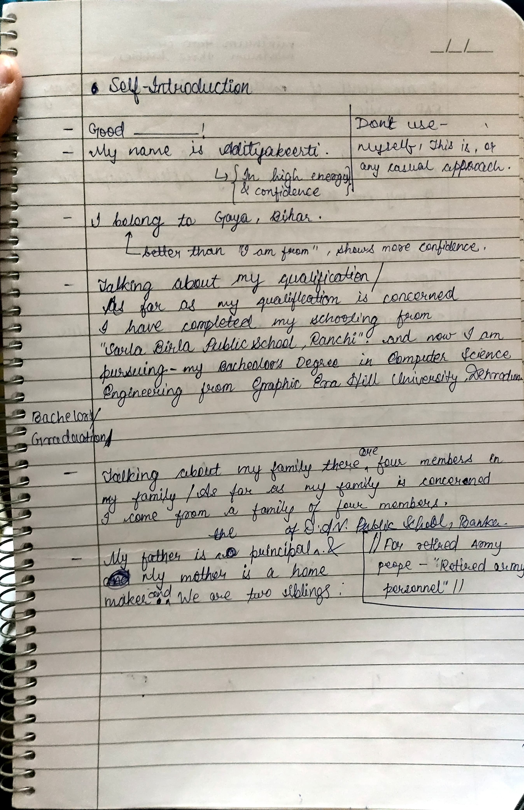
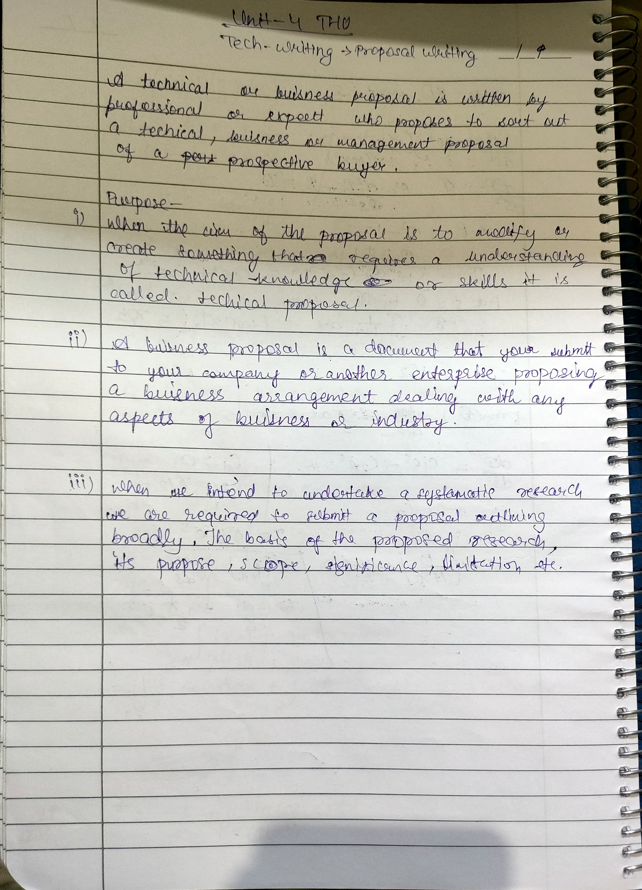
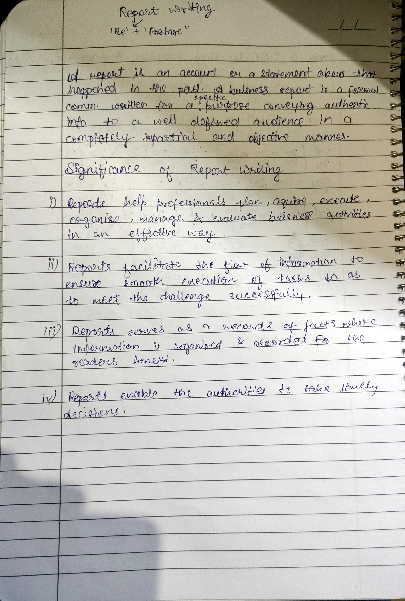
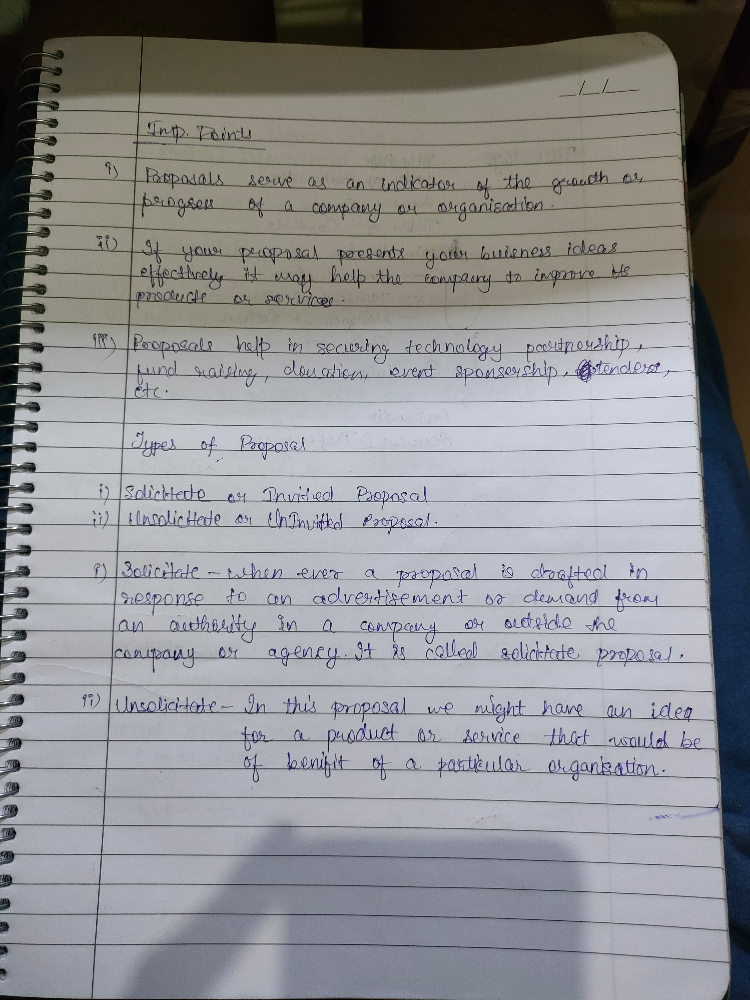

Welcome to my professional communication portfolio. Here, you'll find an overview of my journey, projects, and achievements in the field of communication.
This is the starting month of second semester and I will be updating daily about the daily progress of the Professional Communication class.
Today was the start of the second semester and sir gave us a walkthrough to the syllabus.
Syllabus discussion continued and sir gave a brief summary on the writing section part of each topic of the syllabus.
I was absent.
We wrote essays on the topic: "The Person You Admire the Most."
We explored advanced vocabulary, delving into its various meanings. Additionally, we learned about phrasal verbs, idioms, and related topics.
I was absent but class studied advanced vocabulary and wrote about it, covering at least ten idioms. They also crafted a paragraph focused on phrasal verbs.
I was again absent because I am out of town, but class continued learning about advanced vocabulary, writing a paragraph that included at least ten idioms and another centered on phrasal verbs.
Today we covered interviews and JAM sessions, learning how to create stories and practice effective self-presentation.We had a GD(Group Discussion) round today. The whole class was divided into 7-8 groups. I think Me and My group performed more than I expected because of almost all the good speakers of the class were in the same group which made it expectionally well. I am saying all this because when our group was discussing the topic (iPad kids), Whole class was paying more attention as compared to other groups. Thank You
I was absent but the class continued with interviews and JAM sessions, focusing on self-introduction techniques and participating in mock interviews to enhance our presentation and interview skills.
We explored extemporaneous speaking, learning its concepts and practicing important speeches to improve our spontaneous and confident speaking abilities.
We continued practicing extemporaneous speaking, just as we did on March 4th.
We gave presentations to our peers on assigned topics such as medical facilities and the education system. This exercise was designed to enhance our public speaking and presentation skills.
We did practice mock interview and JAM sessions.
I was absent, though class continued the previous topic, focusing on identifying and correcting pronunciation and grammatical errors, along with other mistakes, to enhance our speaking and writing skills.
I learnt the correct way to introduce myself. Here is the theoritical portion which covers all the basic things about it. 
I was absent, and the class continued learning the proper way to introduce oneself.
We had an interview session where our teacher provided us with commonly asked interview questions to help us prepare effectively.
We continued practicing interview sessions.
We had a group discussion on the topic "iPad Children."
The group discussion on "iPad Children" continued.
We began the writing section, focusing on Unit 5: Technical Writing, and also had a short group discussion. Here is the classwork.
We continued Unit 5 and learnt about REPORT writing had a whole class group discussion on the topic "Ways of Water Conservation." Here is the overview of the class.
We discussed food adulteration, its issues, major health impacts, and preventive measures to avoid it.
We debated the ongoing hot topic "India vs Bharat."
We learned about proposal writing. Here is the classwork.
We learned the basics of research paper writing.
We completed the research paper writing section.
This 2nd semester came to an end which taught me and gave me experience about various things like spoken skills and many more.
Feel free to reach out to me at adityaanurag461@gmail.com.